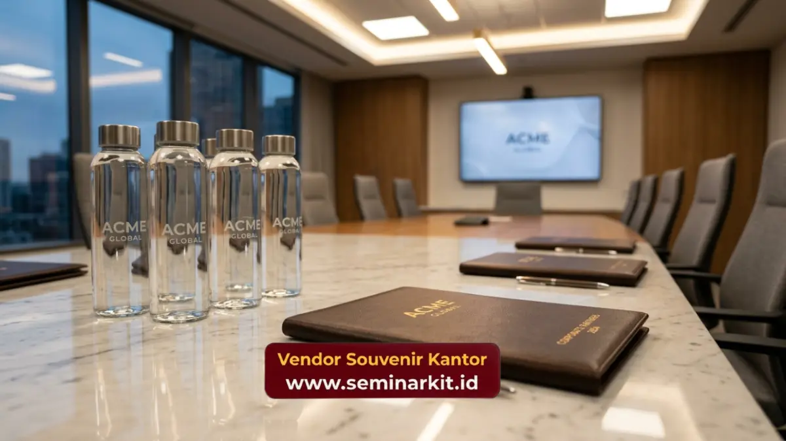

Souvenir corporate untuk klien bisnis adalah barang bermerek logo perusahaan yang diberikan sebagai bentuk apresiasi dan penguat hubungan dengan klien.
Pemberian souvenir ini umumnya dilakukan pada momen kerja sama tertentu, seperti pertemuan bisnis, penandatanganan kontrak, atau perayaan akhir tahun bersama klien.
- Souvenir corporate untuk klien mencakup pilihan seperti gift box, tumbler premium, hingga alat tulis eksekutif.
- Pemberian souvenir memperkuat kesan profesional dan apresiasi terhadap kerja sama bisnis.
- Desain dan kemasan souvenir turut memengaruhi persepsi klien terhadap perusahaan.
- Momen pemberian souvenir sebaiknya disesuaikan dengan tahapan hubungan bisnis yang sedang berlangsung.
- vendorsouvenirkantor.web.id menyediakan pilihan souvenir corporate custom logo untuk kebutuhan klien bisnis Anda.
Apa Saja Ide Souvenir Corporate untuk Klien Bisnis?
Berikut tujuh ide souvenir corporate yang umum diberikan kepada klien bisnis beserta konteks penggunaannya.
1. Gift Box Premium Multi-Item
Gift box premium multi-item menggabungkan beberapa produk seperti pena, notebook, dan tumbler dalam satu kemasan eksklusif. Pilihan ini cocok untuk klien strategis pada momen penting seperti perpanjangan kontrak.
2. Tumbler Stainless Custom Logo
Tumbler stainless custom logo menjadi pilihan populer karena fungsional dan sering digunakan penerima dalam aktivitas sehari-hari, sehingga logo perusahaan terekspos berulang kali.
3. Alat Tulis Eksekutif Berbahan Kulit
Alat tulis eksekutif berbahan kulit memberikan kesan elegan dan cocok diberikan kepada klien level manajerial ke atas sebagai simbol penghargaan atas kerja sama yang berlangsung.
4. Jam Meja Custom Logo
Jam meja custom logo umumnya diletakkan di ruang kerja klien sehingga menjadi pengingat visual identitas perusahaan pemberi dalam jangka waktu panjang.
5. Tas Kerja atau Tote Bag Premium
Tas kerja atau tote bag premium cocok digunakan sebagai souvenir untuk acara seminar atau pertemuan bisnis yang melibatkan banyak klien sekaligus.
6. Plakat Penghargaan Kerja Sama
Plakat penghargaan kerja sama umumnya diberikan pada momen simbolis, seperti pencapaian target kerja sama tertentu atau ulang tahun kemitraan bisnis.
7. Hampers Korporat Bertema Akhir Tahun
Hampers korporat bertema akhir tahun menjadi pilihan populer untuk menyapa klien secara personal menjelang pergantian tahun sekaligus mempererat hubungan bisnis yang telah terjalin.

Mengapa Souvenir Corporate Penting bagi Hubungan Klien?
Souvenir corporate penting bagi hubungan klien karena menunjukkan bentuk apresiasi yang bersifat personal di luar transaksi formal, sehingga memperkuat kepercayaan dan loyalitas klien terhadap perusahaan.
Pemberian souvenir yang konsisten dan berkualitas juga membantu menjaga top-of-mind awareness klien terhadap perusahaan, terutama pada industri dengan tingkat kompetisi tinggi.
Apa yang Perlu Diperhatikan Saat Memberikan Souvenir kepada Klien?
Hal yang perlu diperhatikan saat memberikan souvenir kepada klien meliputi kesesuaian nilai barang dengan kebijakan gifting internal klien, ketepatan waktu pemberian, serta kualitas kemasan yang mencerminkan citra perusahaan.
Perusahaan juga perlu memastikan desain logo tercetak dengan presisi dan tidak mengurangi nilai estetika produk secara keseluruhan.
Untuk kebutuhan souvenir corporate klien bisnis dengan kualitas premium dan proses custom logo yang profesional, tim vendorsouvenirkantor.web.id siap membantu perusahaan Anda memilih produk yang paling sesuai dengan momen dan target klien.
Souvenir corporate untuk klien bisnis berperan penting dalam memperkuat hubungan profesional sekaligus menjaga citra perusahaan tetap positif di mata klien.
Pemilihan jenis produk dan momen pemberian yang tepat akan memaksimalkan dampak souvenir tersebut terhadap loyalitas klien jangka panjang.
Konsultasikan kebutuhan souvenir corporate untuk klien bisnis Anda bersama vendorsouvenirkantor.web.id sekarang.

Banner promosi: klik gambar untuk langsung terhubung ke WhatsApp tim sales.